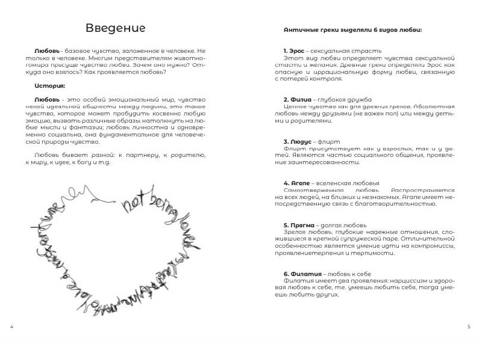
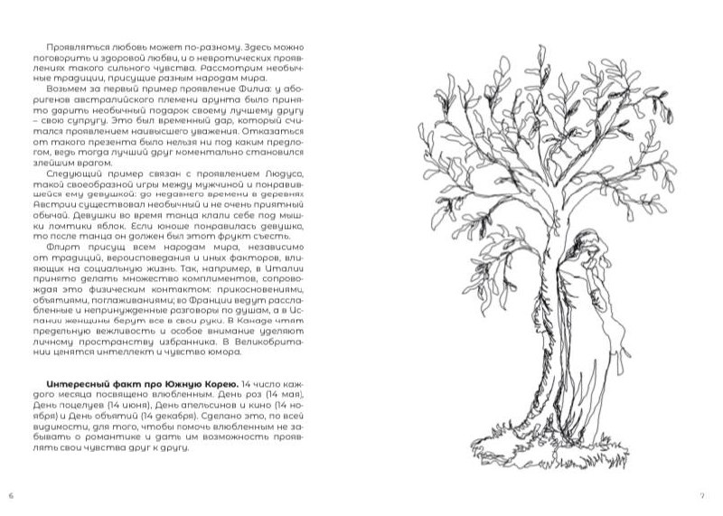
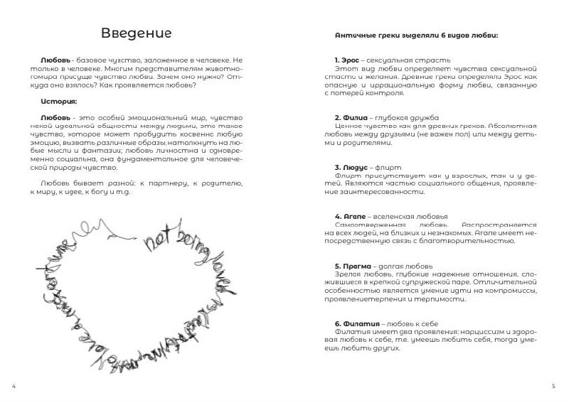
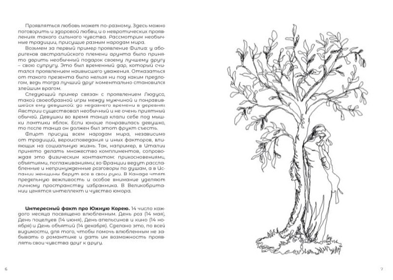
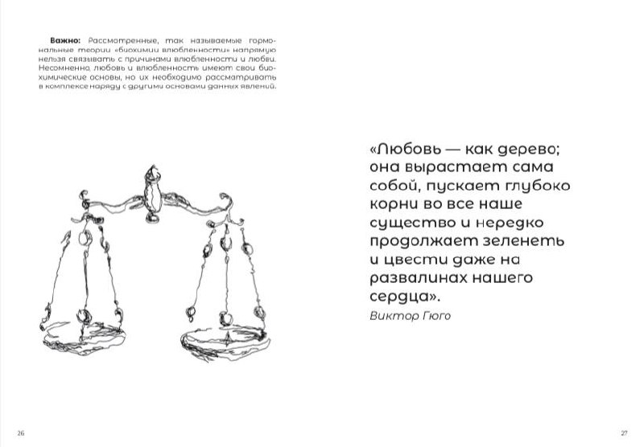
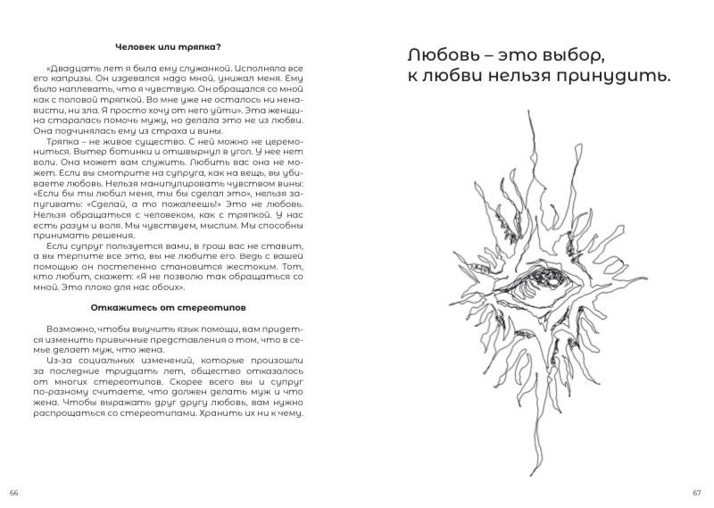

назад


назад


Книга по психологии "Анатомия сближения"
Любовь является важной потребностью человека, которая может дать ему ощущение безопасности, уверенности и счастья. Кроме того, любовь может помочь укрепить нашу самооценку и научить нас быть более доброжелательными и заботливыми в отношении других людей. Знание языков любви партнера и своих собственных языков любви может помочь улучшить качество отношений. Каждый человек может выражать и воспринимать любовь по-разному, поэтому понимание языка любви партнера и умение использовать его может помочь укрепить эмоциональную связь.
 - Ухаживание за партнером так, как это нравится ему, может улучшить качество отношений и сделать их более гармоничными.
- Забота о потребностях и желаниях партнера может проявляться в малых вещах, таких как приготовление любимой еды или предложение провести время вместе.
- Грамотные взаимоотношения с партнером важны, чтобы сохранить эмоциональную связь и избежать конфликтов. Это может включать в себя общение, поддержку, доверие, уважение и открытость.
- Избегание обидных слов, умение слушать и быть открытым для обратной связи также могут помочь создать здоровые отношения.